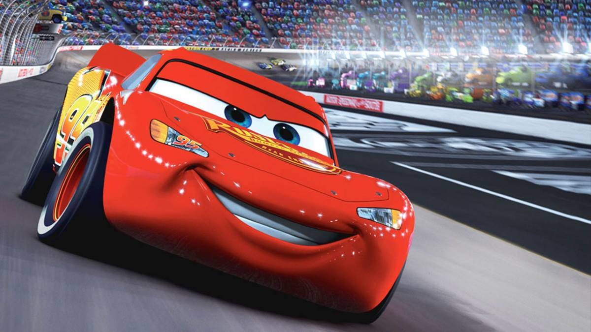

Relâmpago McQueen é o famoso carro de corrida protagonista da Pixar. Com sete títulos da
Copa Pistão e o número 95 pintado na lataria vermelha, ele começou como um campeão arrogante e sem amigos.
Até se perder na cidadezinha de Radiator Springs e aprender que vencer não é tudo. No fim da carreira, virou treinador da jovem Cruz Ramirez, passando o legado adiante.

No primeiro filme, ele é arrogante e obcecado em vencer. Até se perder na pequena Radiator Springs,
onde faz amizades verdadeiras e aprende que a vida vale mais do que troféus. No segundo,
vai competir no Grande Prêmio Mundial, mas quem rouba a cena é o Mate, que se envolve por acidente numa missão de espionagem internacional.
Já no terceiro, McQueen sofre um acidente grave e enfrenta a ameaça da aposentadoria com a chegada de carros ultramodernos. Até redescobrir suas origens ao lado da treinadora Cruz Ramirez e decidir passar o legado adiante.